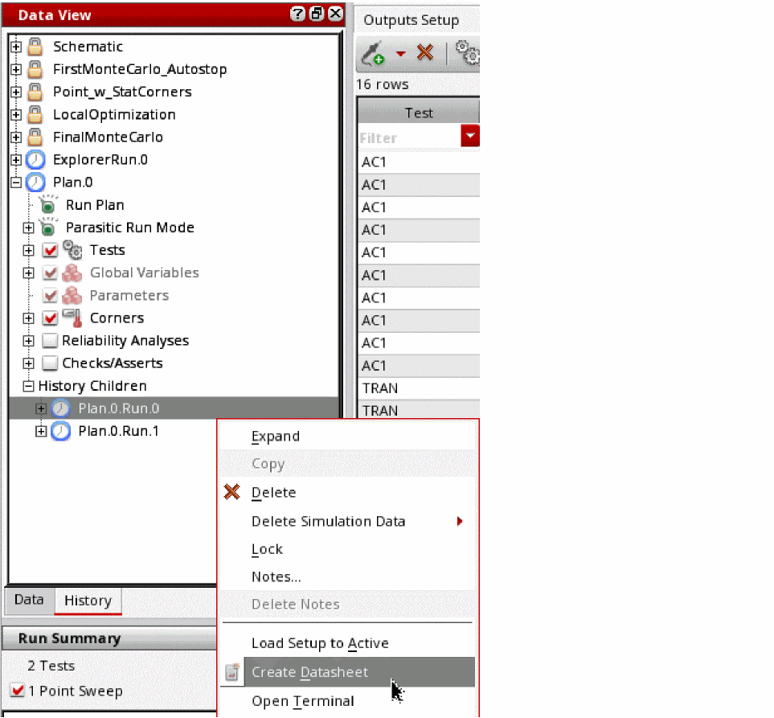

23
Working with Documents and Datasheets
ADE Assembler allows you to add documents that you want to refer to when working with the design. For example, you can add the design specifications document for your design, so that you can refer to it when working with the design. The added documents are displayed in the Documents directory in the
Another important feature in ADE Assembler is the ability to save the setup details and results in the form of datasheets. These datasheets can be saved in .html format and viewed in Internet browsers.
See the following topics for more information:
- Adding Documents
- Opening Documents
- Removing Documents
- Saving Documents
- Creating a Datasheet for a History
- Displaying Customized Waveform Images in the Datasheet
- Opening a Datasheet
- Customizing the Datasheet Format and Structure
Adding Documents
You can add documents in the HTML, CSV, PDF and text documents in ADE Assembler.
To add a document, do the following:
-
Choose Create – Document.Alternatively, you can click where it says Click to add document in the Document directory on the Data View assistant pane.The Choose Documents to be Added form appears.
-
Select the document you want to add and click Open.
The document is displayed in the Documents directory in the Data View pane.
Opening Documents
To open a document, do the following:
-
In the Documents tree on the Data View pane, double-click the document.
The document is opened in its associated program. For example, if you open a PDF file, it is opened in Adobe Acrobat.
The default application or program associated with different file types cannot be specified in Virtuoso. You can use the window manager settings for your operating system to change the default association. For example, in KDE, you can use the Settings–File Associations command.
Removing Documents
To remove a document, do the following:
-
In the Documents tree on the Data View pane, right-click the document you want to remove and choose Delete.
The program deletes the selected document.
Saving Documents
You can save a document displayed in the Documents tree on the
To save a document under a different name or at a different location, do the following:
-
In the Documents tree on the Data View pane, right-click the document you want to save under a different name or at a different location and choose Save As.
The Save Document As form appears. - Select the directory in which you want to save the file.
- In the File name field, enter the name under which you want to save the document.
- Click Save.
Working with Datasheets
- Creating a Datasheet for a History
- Displaying Customized Waveform Images in the Datasheet
- Opening a Datasheet
- Customizing the Datasheet Format and Structure
Creating a Datasheet for a History
To create a datasheet for a history checkpoint, do the following:
-
In the History tab of the Data View pane, right-click the history for which you want to create a datasheet and choose Create Datasheet.
The Create Datasheet form appears.
Note the following:-
You can also choose Create – Datasheet or click
 on the Results toolbar to open the Create Datasheet form.
on the Results toolbar to open the Create Datasheet form. - You cannot create a datasheet for a check point when simulations are in progress for that checkpoint.
- For group histories, you can create a datasheet at the group level or for a specific child history.
To create a datasheet at the group history level, right-click the group history and choose Create Datasheet. Datasheets for all child histories in that group are saved in separate html files. In addition, a datasheet containing links to all the datasheets created for child histories is created for the group level.
To create a datasheet at the level of a child history, right-click the name of the child history and choose Create Datasheet.
 -
You can also choose Create – Datasheet or click
-
In the Name field, type a name for the datasheet.
-
In the Location field, type the directory path where you want the program to write your datasheet; or do the following:
- Click Browse.
- On the form that appears, navigate to and select the directory where you want the program to write your datasheet.
- Click Open.
Note the following:-
By default, the datasheet is created in the
documentsdirectory of the maestro view. -
If you do not specify the absolute path to a directory in the Location field, the directory will be created in the current working directory. For example, if you run the
virtuosocommand from/net/designs/myDesignand typemyDatasheetsin the Location field, datasheets will be created in the/net/designs/myDesign/myDatasheetsdirectory.
-
(Optional) Select or clear the following check boxes:
Check Box Description When selected, this option writes the results summary information to the datasheet.
The results summary information is displayed in the following sections in the datasheet:
- Results Summary section in the main datasheet page
- Results Summary section in the datasheet page for each test
The text Various in the Target column in the Results Summary section indicates that you have overridden or disabled one or more corner specifications for a measurement. For more information, see Disabling and Enabling Corner Specifications.
For information about the colors used in the Minimum Value and Maximum Value columns in the Results Summary section, see Colors Used to Display Status of Measured Values and Specifications in Datasheets.
When selected, this option writes the variables summary information to the datasheet, including names and values of variables.
The variables summary information is displayed in the Variables section in the main datasheet page.
When selected, this option writes the corners summary information to the datasheet, including the list of corners enabled or disabled for each test, values of parameters and design variables at corners, and the model groups added for each corner.
The corners summary information is displayed in the Corners section in the main datasheet page.
When selected, this option saves the schematic diagrams in the datasheet. These diagrams are not displayed on the main datasheet page. Instead, a link to the diagram for each test is added to the Tests Summary section. When you click the hyperlink for the saved
schematic diagram , a .html page saved by Virtuoso Schematic Editor is displayed. Diagrams of the schematic of the design and the devices instantiated in it are displayed on this page. The top of the page shows a Table of Contents (TOC) and a graphical TOC. Click the links in the TOC to view a particular schematic diagram.When selected, this option writes the test summary information to the datasheet, including the test name, test design, simulator, and state information.
The tests’ summary information is displayed in the Tests Summary section in the main datasheet page.
When selected, this option writes the parameters’ summary information to the datasheet, including the names and values of parameters.
Parameters’ summary information is displayed in the Parameters section in the main datasheet page.
When selected, this option writes the detailed results information for each test to the datasheet, including the parameter values for each run (sweeps and corners) and the output values for each measurement expression.
The detailed results information for each test is displayed in the Detailed Results section in the datasheet page for that test.
For information about the colors used in the Value and Target columns in the Outputs sub-section of the Detailed Results section, see Colors Used to Display Status of Measured Values and Specifications in Datasheets.
The Target column is displayed for a measurement in the Outputs sub-section of the Detailed Results section only if you have overridden or disabled a corner specification for the measurement. For more information about overriding or disabling corner specifications, see Working with Specifications.When selected, this option launches the datasheet in a web browser.
The datasheet is displayed in the browser specified in the Web Browser field of the
User Preferences form. The default value of the Web Browser field isfirefox.You can also specify the default browser to be used by setting the following environment variable in the your
.cdsenvfile before starting the Virtuoso Design Environment:ui webBrowser string "
browserName"where
browserNameis the name of the browser executable. The default value for this environment variable isfirefox. -
Select the Include Waveforms check box to display waveform images in the datasheet files. This check box is selected by default.
- Select the Use Quickplot data check box if you want to use quick plot data to print waveforms in the datasheet. This option helps quickly print waveforms in the datasheet against regular plot. When this check box is selected, quick plot is used for transient data and regular plot is used for non-transient data. The default setting of this check box is determined by the value of the useQPDataToCreateDatasheet environment variable.
-
In the Plot field,
-
Select All if you want to plot all the graphs in the Virtuoso Visualization and Analysis XL graph window and include them in the datasheet.
- Select Open Graphs to include graphs that are currently open in the graph window. When this option is selected, the Use Quickplot data check box field is not available.
- Select Replace Using Template if you want to plot the graphs from a plotting template, which you saved earlier, and include them in the datasheet. You can then select the plotting template from the drop-down list displayed next to it. When this option is selected, the Use Quickplot data check box field is not available.
Note the following:- If you select the Open Graphs option, but no graph is plotted in the graph window, then the plot all command is run to plot all the graphs. These graphs are then printed in the datasheet.
- If you select the All option, but some waveforms are already plotted in the graph window, then new waveforms are plotted based on the mode you have selected in the Plotting Mode drop-down list on the Results tab. The available plotting modes are: append, replace, new window, and new subwindow.
-
Select All if you want to plot all the graphs in the Virtuoso Visualization and Analysis XL graph window and include them in the datasheet.
The waveform images are saved as Portable Network Graphic (.png) image files in the datasheet directory. For more information about the location of the datasheet directory, see Location of Datasheet Files.
See also: Displaying Customized Waveform Images in the Datasheet - By default, the waveform images in the results directory for a history item are displayed in the datasheet. If waveform images are not available for a history item, they are automatically created and displayed in the datasheet.
-
(Optional) On the Points tab, do one of the following:
- (Optional) On the Description tab, enter a description for the datasheet.
- Click OK.
The program writes the datasheet information you requested. If you selected the Launch in browser check box, ADE Assembler launches the datasheet in the default HTML browser, as shown below.
If the links to schematics are added in the Tests Summary, the schematic diagrams are saved as part of the datasheet, as shown below.
Use the navigator to traverse through the design hierarchy, or the Table of Contents to go to a particular schematic master.
The datasheet saved for a group history, for example, a history saved for a run plan, contains links to all child histories in that group run.
Location of Datasheet Files
The datasheet files are saved in a directory that has the same name as the name of the datasheet. For example, if you specified the name of the datasheet as myDatasheet in the myDatasheet directory in the location specified in the
The datasheet directory contains the following files:
Table 23-1 Datasheet Files
Colors Used to Display Status of Measured Values and Specifications in Datasheets
The following colors are used as the background color for cells in the Minimum Value and Maximum Value columns in the Results Summary section to display the status of measured values:
The following colors are used as the background color for cells in the Value and Target columns in the Outputs sub-section in the Detailed Results section to display the status of measured values and corner specifications:
Displaying Customized Waveform Images in the Datasheet
If the setup in a history item is the same as the active setup, you can display customized waveform images for the history item by doing the following:
Waveforms are displayed in waveform windows.
- Customize the waveforms as required in the waveform window.
- Create a datasheet without closing the waveform windows in which you customized the waveforms.
The customized waveforms are added to the datasheet.
axlCustomSaveGraphImageArguments SKILL function.Opening a Datasheet
To open a datasheet, do one of the following:
-
In the Documents tree on the Data View pane, double-click the HTML file for the datasheet.
The HTML file for the datasheet has the same name as the name of the datasheet. For example, if you specified the name of the datasheet asmyDatasheetin the Create Datasheet form, the HTML file for the datasheet will have the namemyDatasheet.html. -
Open the
.xmlfiles in the datasheet directory in a web browser.
For more information about the.xmlfiles in the datasheet directory, see Location of Datasheet Files.
Customizing the Datasheet Format and Structure
The following stylesheet files are used to control the format and structure of datasheets. These files are located at <your_install_dir>/share/cdssetup/adexl.
To customize the structure of the main datasheet page, do the following:
-
Copy the
datasheetMainDoc.xslfile in the<your_install_dir>/share/cdssetup/adexldirectory to a different location.
Rename the file, if required. - Open the file in a text editor and make the required changes.
-
Use the
adexl.datasheet mainDocXSLFileenvironment variable to specify the location of the file. For more information about this environment variable, see mainDocXSLFile.
To customize the structure of the datasheet pages for tests, do the following:
-
Copy the
datasheetTestDoc.xslfile in the<your_install_dir>/share/cdssetup/adexldirectory to a different location.
Rename the file, if required. - Open the file in a text editor and make the required changes.
-
Use the
adexl.datasheet testDocXSLFileenvironment variable to specify the location of the file. For more information about this environment variable, see testDocXSLFile.
To customize the formatting of the datasheet files, do the following:
-
Copy the
datasheet.cssfile in the<your_install_dir>/share/cdssetup/adexldirectory to a different location.
Rename the file, if required. - Open the file in a text editor and make the required changes.
-
Use the
adexl.datasheet CSSFileenvironment variable to specify the location of the file. For more information about this environment variable, see CSSFile.
Return to top